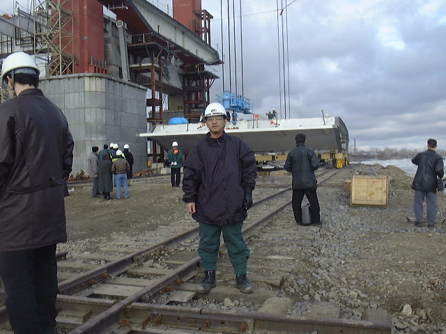
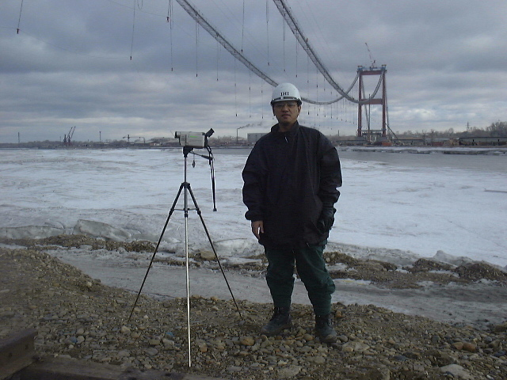

Alexander, building a suspension bridge in Kazakhstan
Return to Home Page
March 29, 2000 - Bridge update: today we started lifting the steel decks
and start swinging it to center portion.
We hope to complete erection by 20 April 2000. We have about 40 decks to
erect.


mailto:qcshs75@yahoo.com